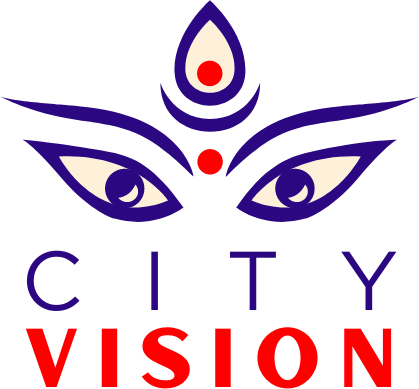

About CityVision TV
By Nepali, for Nepali.
CityVision TV is a community digital broadcaster telling the stories of the Nepali community in Australia: the news that affects us, the people building new lives here, and the culture we carry from home.
We make news, documentaries, talk shows and podcasts, and share them on this website, YouTube, Facebook, Instagram, TikTok and Spotify.

What we do
01Report
News and current affairs for Nepali-Australians through City Vision Reports and our newsroom.
02Tell stories
Documentaries and series like Hamro Story and My Days in Nepal that capture real lives in the diaspora.
03Start conversations
Talk shows and podcasts, including Kurakani, 8 Baje and Diaspora Talk, on the issues that matter to us.
Our shows
All showsPartner with us
Reach the Nepali community across Australia
Advertise, sponsor a show, or collaborate with us on community projects. We would love to talk.
Get in touch